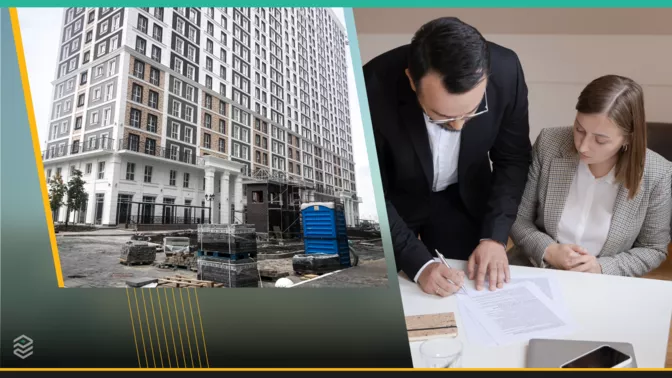

Подумайте тричі: які квартири у новобудовах можуть бути небезпечними
Експерт розповів, із якими договорами щодо нерухомості треба бути найбільш обережними
Квартири у новобудовах користуються все більшим попитом, оскільки у сучасному житлі виправлено помилки попередніх архітекторів та інженерів, тож створено найкращі умови для життя. Також не потрібно мучитись із ремонтом старої "проводки", із пліснявою на стінах та витрачати на ремонт більше, ніж вклав у стару нерухомість.
Але є у цьому і певний ризик, адже найнижчі ціни на нове житло пропонують саме на етапі його будівництва. Що б не обіцяв забудовник, 100% гарантій на те, що ваша квартира буде добудована, ніхто не дає. Та проблеми можуть виникнути не лише із забудовником. І саме у цьому розбирався сайт Pro Гроші разом з експертом.
Керівник практики земля та нерухомість юридичної фірми "Адвінтел" Віталій Каплієнко зазначає, що свої ризики має придбання квартири в новобудові або ж купівля майнових прав на нерухоме майно за договором відступлення права вимоги.
Відповідно до ч. 1 ст. 512 Цивільного кодексу України, відступлення права вимоги є одним зі способів заміни кредитора в зобов’язанні. Проте ця операція є не самостійним зобов’язанням, а лише похідним від основного, такий договір ще називають "перевідступом".
<>Важливим елементом процедури перевідступу прав на квартиру є юридична перевірка сторін договору.Що таке "перевідступ"?
Це укладання договору про перевідступ прав власності на об'єкт інвестування. Тобто ви купуєте права власності на ще не збудовану квартиру у її першого інвестора, а не у забудовника напряму.
Новий покупець ризикує найбільше. Адже внаслідок переуступки прав на квартиру він залишається єдиною стороною, яка не отримала ще свого за договором. В свою чергу забудовник та старий покупець отримали свої кошти.
віталій каплієнко
Адвокат, керівник практики земля та нерухомість юридичної фірми Advintel
До того ж новий кредитор автоматично підписується під усіма умовами, що були визначені в договорі купівлі-продажу майнових прав з первинним покупцем і девелопером. Усі ризики також лягають на плечі нового покупця, наприклад, ризик того, що будинок з якихось причин не введуть в експлуатацію.
З практики слід зазначити, що майже усі забудовники при перевідступі прав на квартиру вимагають від покупця додаткової оплати за таку процедуру. Адже перевідступ прав за договором можливий лише за згодою іншої сторони (забудовника). Якщо забудовник не надасть такої згоди, то перший покупець не зможе поступитися квартирою на користь інших осіб.
Потрібно пам’ятати, що переуступка прав на квартиру це складна процедура, яка вимагає належного документального та юридичного супроводу, – наголошує Каплієнко.
Від правильного документального оформлення та ретельної перевірки наданих документів надалі буде залежати набуття новим власником квартири права власності на неї, тож не нехтуйте послугами професійного юриста.
Адвокат наголошує, що, на жаль, придбання квартири це завжди ризик для покупця, але цих ризиків можливо уникнути, якщо детально проаналізувати та ретельно вивчити об'єкт нерухомості, який вам приглянувся, і того, хто його продає.
Як не треба укладати договір
Наступне застереження стосується укладання будь-яких угод купівлі-продажу нерухомості.
Якщо під час придбання квартири власник пропонує покупцю зазначити в договорі купівлі-продажу не реальну ціну за якою відбувається реалізація квартири, а набагато нижчу цифру, на це у жодному разі не можна погоджуватись.
Така пропозиція має насторожити вас і змусити ретельніше перевірити особу продавця.
Чому це небезпечно?
Ніколи не можна виключати того, що договір може бути визнаний недійсним. У такому разі покупець зажадає отримати свої гроші назад, і, за законом, ви зможете повернути собі лише ту суму, яку вказано у договорі.
Раніше сайт Pro Гроші писав, як правильно придбати квартиру за кордоном і розповідав, коли квартира у спадщину може нести більше проблем, ніж користі.